Par Revive?
Revive ir firma, kas taisa dvieļus(cerams nākotnē arī citas lietas kā šampūnus)cerams nākotnē arī citas lietas kā šampūnus, kas ir veidoti no augstas kvalitātes pateriāliem.
Dvieļi ir veidoti ilgai kalpošanai un lai tu kā pircējs gūtu vislabāko sajūtu.
Par revive dvieļiem
Revive dvieļi ir vadošie līderi hoteļu un citu veidu biznesā.
Tie atšķiras no citiem dvieļiem ar to, ka atstāj neaizmirstamu iespaidu uz to lietotājiem ar savu augstas kvalitātes standartu- mīkstumu un blīvumu, un ir ražoti, lai saglabātu savas īpašības un šarmu pēc to mazgāšanas.
Tas varētu labi papildināt un ietekmēt jūsu hoteļa reputāciju.
Esam pavadījuši vairāk kā gadu, lai testētu un izstrādātu vislabāko dvieli, kādu varam Jums piedāvāt.
Pāris iemesli, kāpēc šie dvieļi ir labāki par pieejamajiem tirgū:
Netiek apstrādāti ar silikonu sākotnējam maigumam;
Augstas kvalitātes mīkstums un blīvums;
Dažāda veida varianti, lai atbalstītu Jūsu kvalitātes un cenas standartus;
Salīdzināti ar dvieļiem Eiropā un citur;
Noturīgi, līdz ar to kalpo ilgi;
Dvieļu izmēri atbilst standartam;
Kontakti
E-pasts - revive.sales.lv@gmail.com
Ja piedāvājums tika izsūtīts lūgums atbildēt uz piedāvājuma ēpastu.